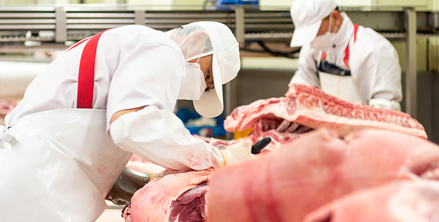

기획취재콘텐츠
- Home
- 제주라이프
- 기획취재콘텐츠
좋은 것에는 모두 이유가 있다. 제주 양돈 산업 2부새로운 글


천혜의 자연이 선물하는 맛, 청정 제주 돼지고기
섬이라는 지리적 특성은 외래 악성 가축 질병의 유입을 차단한다. 더불어 천혜의 자연환경인 맑은 공기, 깨끗한 물, 온화한 기후는 고품질의 돼지고기 생산에 최적의 생육 조건을 제공한다. 제주 돼지는 지리적 원산지 표시제에 등록된 지역 특산품이다. 지리적 원산지 표시제는 상품의 품질이 지리적 환경에 기초한 경우에 한해 그 상품이 특정 지역에서 기원했다는 것을 인증해주는 제도다. 원산지 표시제에 등록되었다는 것은 해당 지역의 상품이 환경적인 영향으로 우수한 품질을 확보했다는 것을 의미한다. 천혜의 자연에서 사육된 제주 돼지고기의 우수한 품질은 과학적인 분석을 통해서도 꾸준히 입증되어 왔다.

※ 출처 : 국내 주요 돈육생산 지역별 육질분석 보고서
국내 주요 돈육 생산 지역별 육질 분석 보고서에 따르면, 제주 흑돼지는 적색이 진하고 맛을 결정하는 마블링(근내지방도)이 일반 돼지에 비해 높게 나타났다. 또한, 다가불포화지방산의 함량이 높고 콜레스테롤 함량이 상대적으로 낮아 건강 기능성 측면에서도 매우 우수하다. 조직이 견고해 씹는 맛이 좋으며 고소한 지방은 미식가들의 입맛을 사로잡는다.
제주 전통 흑돼지는 아니지만, 제주에서 사육된 백돼지(LYD 교잡종) 또한, 다른 지역에서 사육된 돼지고기에 비해 적색이 진하고 마블링이 높으며 마찬가지로 콜레스테롤 함량이 낮고 다가불포화지방산 함량이 높다. 제주 돼지는 전체적으로 근육 조성, 관능평가 육색, 물성(식감) 항목에서 강세를 보이며, 특히 물성 항목은 소비자가 차이를 인지할 정도로 뚜렷한 차이를 보였다.

※ 출처 : 축산물품질평가원 축산유통정보 기간 별 경락 가격
※ 데이터 추출 기간 : 2017년 1월 1일 ~ 2019년 12월 31일
※ 데이터 추출 기간 : 2017년 1월 1일 ~ 2019년 12월 31일
청정 지역에서 좋은 종돈과 사육기술을 바탕으로 자란 제주 돼지고기는 그 품질을 인정받아 국내에서도 프리미엄 돼지고기로 판매된다. 2017년부터 2019년까지 3년간 제주를 제외한 전국 돼지고기 경락 가격 평균은 1kg당 4천104원이다. 같은 기간 제주 돼지고기 경락가격 평균은 1kg당 5천282원으로 전국 돼지고기 경락 가격 평균보다 약 20% 높다. 또한, 전국에 유통되는 돼지고기 중 제주에서 생산된 돼지고기는 25%에 달한다.
돼지고기, 브랜드가 되다.
제주 양돈산업은 조합 형태의 공동체 중심으로 성장했다. 각 조합과 농장에서는 종돈 개발부터 사육환경 관리, 체계적인 생산 및 품질관리 시스템 구축 등 균등한 품질의 돼지고기 생산을 위해 노력하고 있다. 또한, 돼지고기 도소매 유통 및 가공품 개발 등 6차 산업화를 통해 산업 경쟁력을 확보 중이다. 제주양돈농협의 프리미엄 돼지고기 브랜드 &제주도니&는 생산부터 유통까지 브랜드 계약 23개 농가, 수출계약 50개 농가, 종돈 공급 87개 농가 등 제주 도내 100여 개 농가를 통합 관리해 균일한 고품질의 돼지고기를 생산한다. 제주 양돈 브랜드 이미지 제고 및 확산을 위해 유통과 마케팅에도 투자를 아끼지 않는다. 제주동부축산영농조합법인은 스마트 축사를 도입하고 친환경 시스템을 구축하는 등 지역과 상생하며 고품질의 양돈을 생산하는 데 적극적으로 투자하고 있다. 여기에 제주 돼지고기 가공 및 유통 브랜드 &몬트락&을 설립해 제주 돼지의 맛을 도내·외로 선보이고 있다.
농장에서 식탁까지, 프리미엄 제주 돼지고기 브랜드 ‘제주도니’
‘제주도니’는 제주양돈농협(조합장 고권진)에서 관리하는 프리미엄 제주 돼지고기 브랜드다. 제주양돈농협은 우수한 품질 기반의 제주 돼지고기 생산관리와 유통을 위해 2007년도 &제주도니& 브랜드를 구축하고 소비자 선호도에 기반한 표준화된 고품질 규격돈을 생산부터 유통까지 체계적인 시스템으로 관리하고 있다.
- 제주양돈농협 고권진 조합장이 가공 전 돼지고기의 상태를 점검하고 있다. -
제주양돈농협은 브랜드 농가를 조직화 및 계열화해 종돈, 사료, 사양 관리, 사육환경 등에서 일반 돈육과 차별화된 고품질 제주도지 브랜드 돼지고기를 도소매로 유통하고 있습니다.
계열화는 농가에서 &제주도니&를 생산하기까지 종돈, 사료, 유통, 수출과 육가공 등 단계별로 운영 및 관리하는 체계를 의미한다.

2012년 제주양돈농협에서 설립한 제주도니유전센터에서는 우수한 혈통의 종돈을 수입해 제주 맞춤형 종돈을 교배하고, 이를 제주 도내 농가에 보급하고 있다. 2019년도 종돈 공급 두 수는 87 농가 3,539두로 제주도내 278개 양돈농가 중 25%가 제주양돈농협의 제주도니 유전센터의 종돈을 공급받고 있다.
종돈을 공급받은 농가는 제주양돈농협 청정배합사료공장에서 생산한 냄새 저감과 생산성 향상에 좋은 양질의 사료를 먹여 고품질의 돼지고기를 생산한다. 축사에서 배출되는 분뇨는 제주양돈농협 가축분뇨자원화공장에서 액비와 퇴비, 농업용수로 처리되어 개별 농가의 분뇨 처리에 대한 고민을 해결한다. 덕분에 농가는 돼지의 생육환경 및 품질관리에 집중할 수 있다. 제주양돈농협은 여기에 지속적인 농장별 맞춤형 관리가 가능한 동물병원을 운영하고 생산과 유통에서 농가 맞춤형 컨설팅을 제공하며 우수 돼지고기 생산에 필요한 전문화된 지원을 아끼지 않는다.
지난 2018년 제주양돈농협은 축산물종합유통센터를 건립했다. 2만 6천851㎡ 부지에 지하 1층, 지상 3층, 연면적 1만 515㎡ 규모다. 축산물종합유통센터에서는 1일 돼지 1천500마리를 도축할 수 있다. 도축 과정에서 발생하는 폐수를 1천 톤까지 처리할 수 있는 설비와 교차오염방지 시스템도 구축했다. 2019년 축산물종합유통센터에서만 제주 돼지 35만 4천438두가 도축됐다.
체계적인 관리를 통해 생산된 제주 돼지고기 ‘제주도니’는 그 우수성을 인정받아 8년 연속 우수 축산 브랜드 인증을 획득했다. 그뿐만 아니라 KAPF 농림부 축산물 브랜드 경진대회 우수상과 대한민국 축산물 브랜드 경진대회 대통령상을 수상하는 등 괄목할만한 성과를 얻고 있다.

- 수출육가공공장에서는 도축된 돼지를 부위 별 해체부터 진공 포장까지
소비자에게 돼지고기를 전달하는 최종 단계의 가공을 거친다. -
소비자에게 돼지고기를 전달하는 최종 단계의 가공을 거친다. -
소비자에게도 ‘제주도니’는 믿을 수 있는 제주 돼지고기 브랜드로 사랑받고 있다. ‘제주도니’는 제주양돈농협 수출육가공공장(제주)과 용인육가공공장(용인)에서 가공되어, 도내 50여 개 외식업체에 공급된다. 또한 도내 제주시 농협 하나로마트 외 22곳을 포함 프리미엄 온라인 식품 유통 플랫폼 ‘마켓컬리’와 축산물 직거래 플랫폼 ‘미트박스’ 등 온오프라인 마트와 유통 플랫폼에서 활발하게 판매 중이다.
- 제주양돈농협 수출육가공공장에서 직영판매점을 운영한다.
갓 가공된 신선한 돼지고기를 저렴한 가격에 구매할 수 있다. -
갓 가공된 신선한 돼지고기를 저렴한 가격에 구매할 수 있다. -
제주양돈농협은 ‘제주도니’ 브랜드 인지도를 제고하고 소비자 맞춤형 상품을 개발하는 노력을 기울일 예정이다. 시식 행사, 직거래 장터를 운영해 전국의 소비자와 직접 만나 제주 돼지고기의 우수성을 알린다. 또한, 1인 및 2인 가구의 확대로 소포장을 선호함에 따라 이에 맞는 설비, 인력, 사후처리방안 등 관련 시스템을 구축하고 소포장 돼지고기를 도소매로 판매하는 온라인 몰 판매 채널을 확보할 예정이다.
- ⓒ제주양돈농협 -
2020년에는 제주도니 브랜드 자체 온라인 몰과 모바일 애플리케이션을 구축하고 제주산 돼지고기의 장점을 부각한 공격적인 마케팅 전략을 추진하고 있습니다. 또한, 각 지역행사와 연계해 시식회 행사를 꾸준히 진행하고자 합니다.
- 제주양돈농협 경제사업본부 양경미 팀장
품질 및 생산 관리 역량 향상을 위한 노력도 아끼지 않는다. 제주도니유전센터에 인공수정센터(AI)를 설립해 균등한 품질의 제주 종돈을 생산 및 공급하고 안정적인 정액 공급으로 해마다 문제가 되는 하절기 수태율 향상을 꾀하고 있다. 축산물종합유통센터에는 VCS2000 (돼지도체 자동 판정기계)를 도축라인에 설치해 전체 정육량과 정육율, 대분할부위 정육량과 정육율 측정값을 데이터화하여 생산, 도축, 등급판정, 가공단계 등에서 도축 시스템을 선진화하고 경쟁력을 높일 예정이다.
이전글
다음글